mfa thesis
designing for shared ecological understanding: the yolo basin
Visit the interactive website @ floodplainfutures.github.io ↗ NOTE STILL UNDER CONSTRUCTION
↓ upcoming
The exhibit opens June 4th, 2026: 5:30–9pm at the Manetti Shrem Museum, UC Davis. Come see the work in person.
Open through June 20th, 2026. Free and open to the public.
This page is being updated as the project comes together. It will be finalized after the exhibit opening on June 5th and updated again with closing thoughts after June 20th when the exhibit closes.
overview
I've lived in Davis almost my entire life. I've driven past the Yolo Basin hundreds of times on I-80, like many people who live in Davis have. To me it was easy to overlook, a pretty landscape during the winters when it flooded and not a whole lot more. I misunderstood it. I didn't actually visit it until January 2026 when I decided to explore the basin for my MFA thesis. It's a place that is just 15 minutes from where I grew up, and I had no idea what was happening there.
There is a lot going on in this space! The basin simultaneously functions as flood control infrastructure, critical migratory bird habitat along the Pacific Flyway, and agricultural land. These roles don't happen separately. They layer on top of each other, shifting with the seasons.
This thesis is an attempt to close that gap through information design, interactive systems, and a planet-centered framework that puts the ecosystem at the center of the work rather than treating it as backdrop. The project translates environmental data and field research into things people can actually encounter in different forms of media and place of time: a website, risograph posters, literature review zines, and a physical exhibition at the Shrem Museum.
the yolo basin
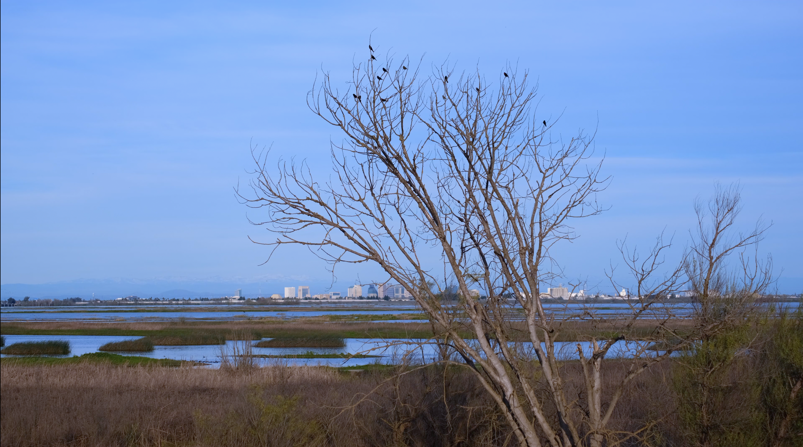
The basin operates across three overlapping identities: flood infrastructure in winter, migratory bird habitat in spring, and agricultural land through summer. These roles do not happen separately. They layer on top of each other, shifting with the seasons, and most people who drive past it on I-80 have no idea any of it is happening.
The big idea behind this thesis is that the Yolo Basin is a living landscape where flood, food, and flight intersect across every season. Design can make that story visible.
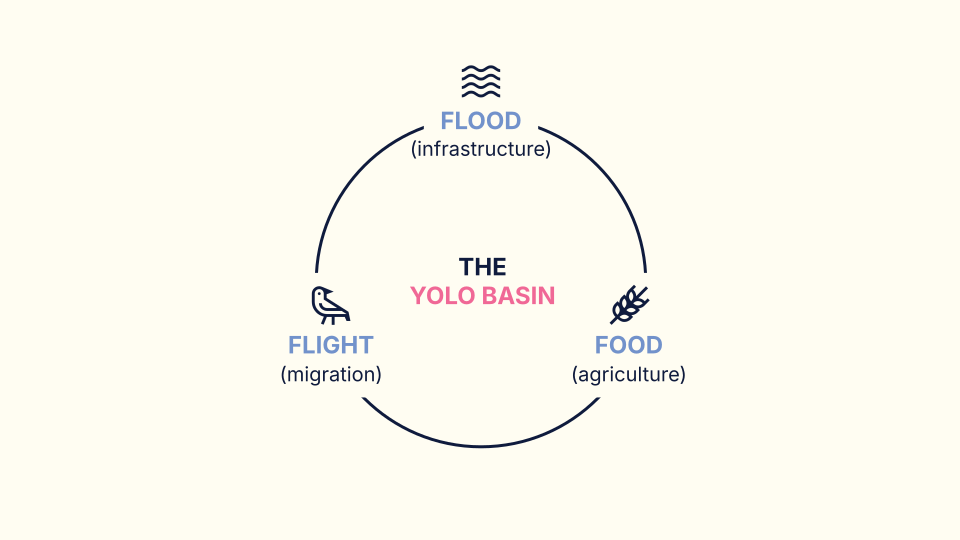
research methods
Research for this project was conducted on site and through the literature. I spent time walking and photographing the basin across different seasons, mapping spatial and seasonal patterns, and collecting data from environmental research and monitoring projects. I also completed an extensive literature review on floodplain systems, migratory habitat, citizen science, and design communication, which became the foundation for the zine series.

influences
Three projects shaped how I thought about communicating ecological information to public audiences.

Wingspan (2019) showed how real ecological data can become a playable, learnable system without losing scientific accuracy. Players learn bird behaviors through repeated interaction rather than instruction. Learn more about the game here ↗.
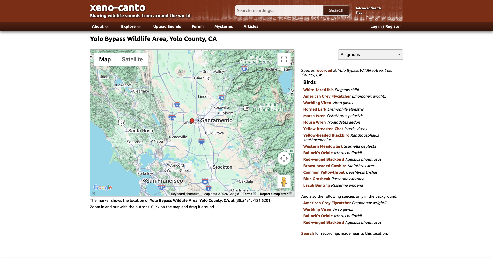
Xeno-canto (2005) translates birdsong into visual spectrograms paired with geographic metadata, creating an interface that works for both experts and curious newcomers. It also demonstrated how crowdsourced citizen science can fill gaps that long-duration data collection cannot. Check out xeno-canto.org ↗ and find Yolo Basin specific recordings here: Yolo Basin species page ↗
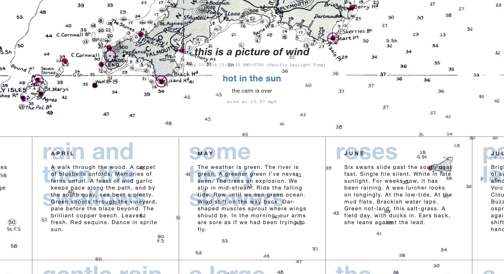
This Is a Picture of Wind (2018) by JR Carpenter is a hybrid web and print project documenting flooding through diary entries. It showed how multiple formats create multiple entry points into the same material. I suggest actually checking this website out as it's very beautiful and made with code! https://luckysoap.com/apictureofwind/main.html ↗
Together these pointed toward an approach built on interactive learning, participatory ecology, and personal storytelling around ecological concerns.
design outputs
interactive website
Visit the interactive website @ floodplainfutures.github.io ↗
The website is the central platform for the project. Built in HTML, CSS, and JavaScript, it features interactive maps showing basin geography and seasonal change, data visualizations of ecological processes, and field notes from site visits. It is designed to be displayed on a monitor as part of the exhibition and accessible online.
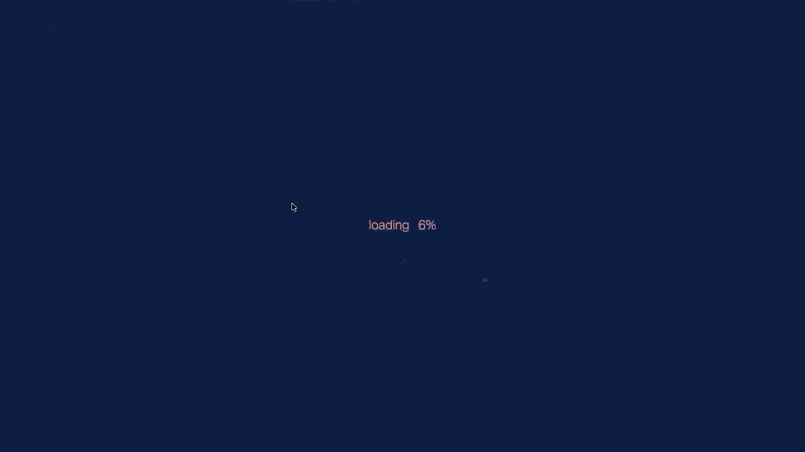
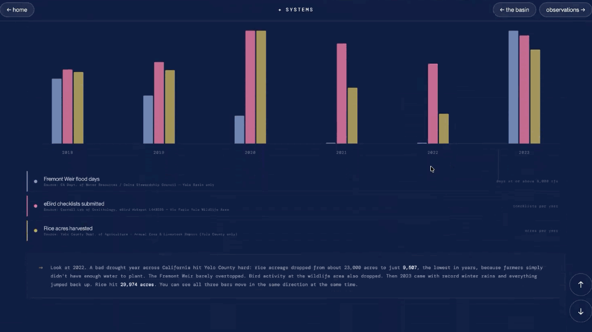
poster series
Four risograph-printed posters: three tabloid posters on the basin's core themes (flood, migration, and agriculture), plus a hand-lettered invite poster for the opening night. Printed at UC CAAN in emerald green & fluorescent pink, then overprinted in black. Mass-printed so visitors can take one home.
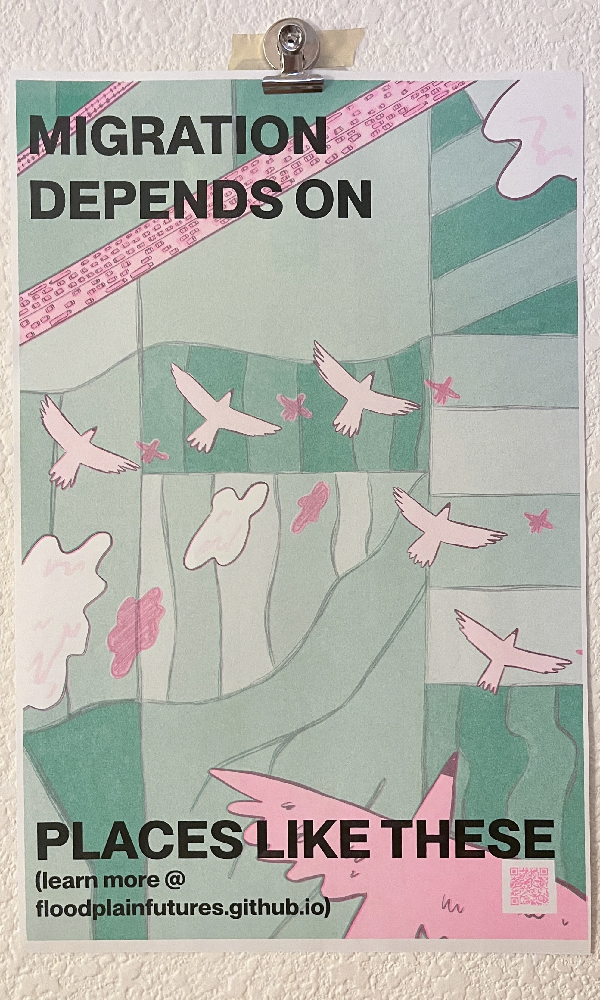
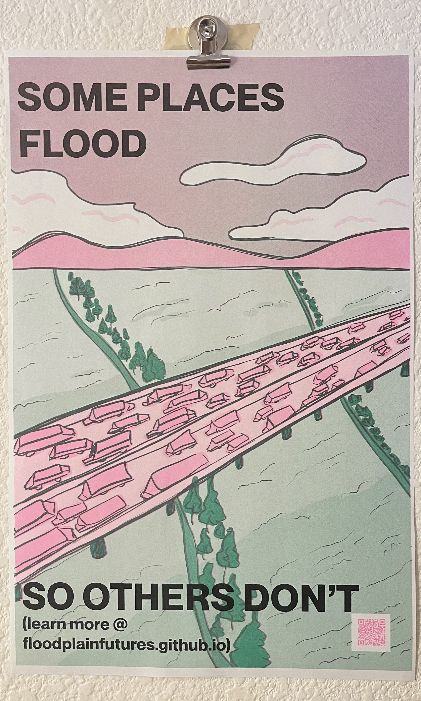
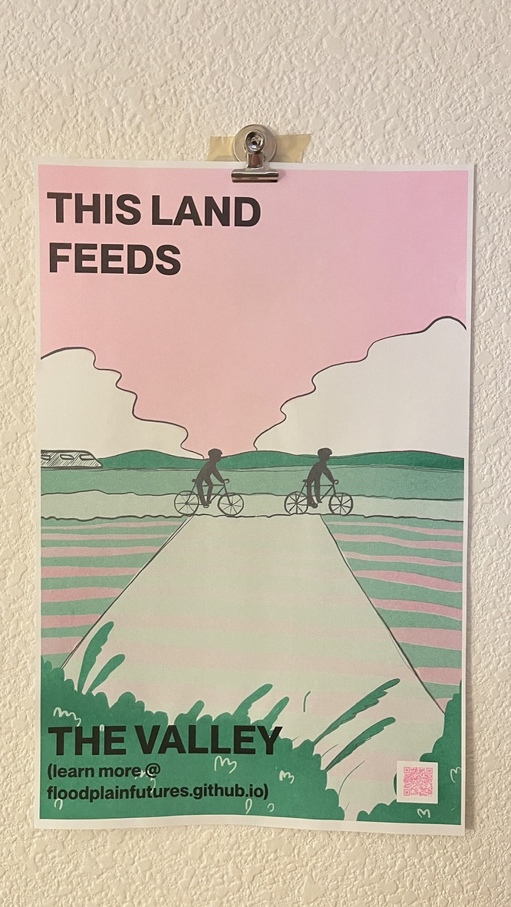
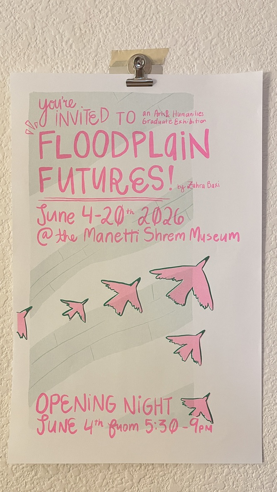
lit review zines
As part of the literature review process, I created a series of small foldable zines summarizing and interpreting key readings related to the thesis. Topics include ecological systems, data visualization, design communication, citizen science, and the history and geography of the basin. Around 20 zines total, printed on 8.5x11 and folded down. These are also available to view at the exhibition.
Browse the full zine series: The Lit Review Project ↗

embroidery hoops
Three 6-inch embroidery hoops depicting the basin's three seasonal stages. Each hoop is hand-stitched over printed aerial photographs and maps of the basin, making the abstract geography tactile and intimate. These hang alongside the posters as part of the exhibition wall.


site map
At the exhibition, a large site map places all key locations within the basin I visited during this thesis. Field photos, bird specimen photography, postcards, news clippings, and site maps are pinned and strung together: showing what events have occurred and giving more context to the site itself.

exhibition
Installation is underway. Photos from the process will be added here as the exhibit comes together: check back after June 4th for documentation of the final space.
The exhibition is at the Manetti Shrem Museum at UC Davis, opening June 4th, 2026 from 5:30–9pm. It runs through June 20th. The centerpiece is a desk with a touchscreen monitor where visitors can explore the interactive website at their own pace. Above the desk is the bulletin board for visitors to learn more about the basin site itself.
All three risograph posters are hung framed on the wall alongside field photographs. A framed colophon with information about the project and collaborators is also on display. Visitors can grab a poster and take it home.
installation process
Installing this exhibition meant figuring out how to make a fairly research-heavy project feel approachable and alive in a physical space. The process involved a lot of decisions about proximity: what goes next to what, how visitors move through the material, where the eye lands first. The desk and monitor anchor the room. The wall materials fan out from there: posters, photographs, the bulletin board, the colophon.
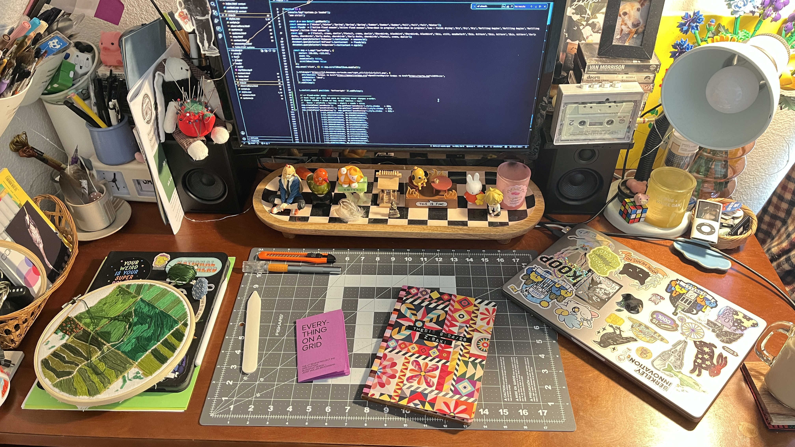
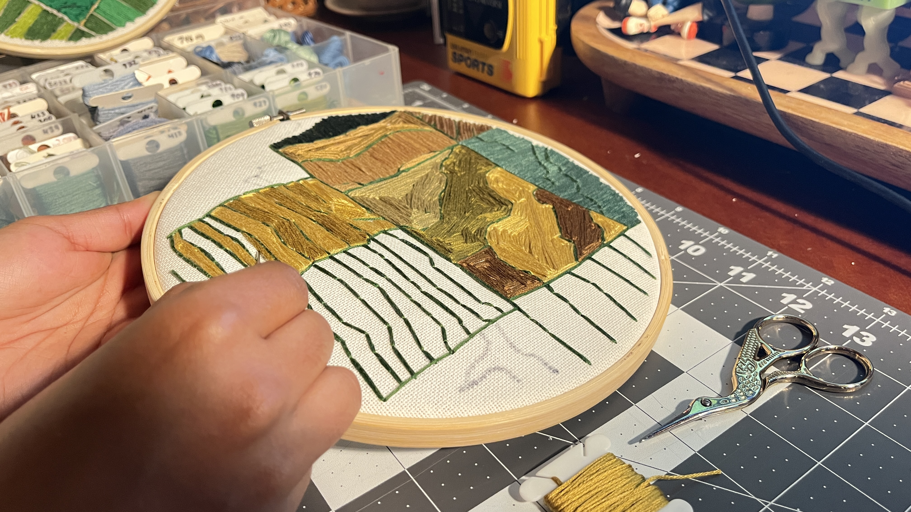
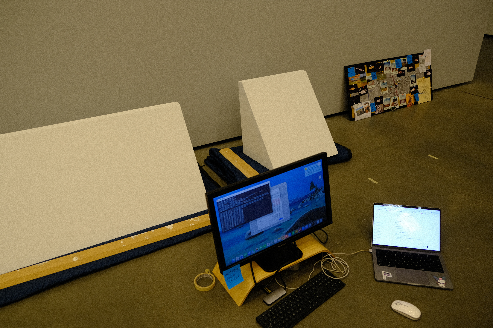
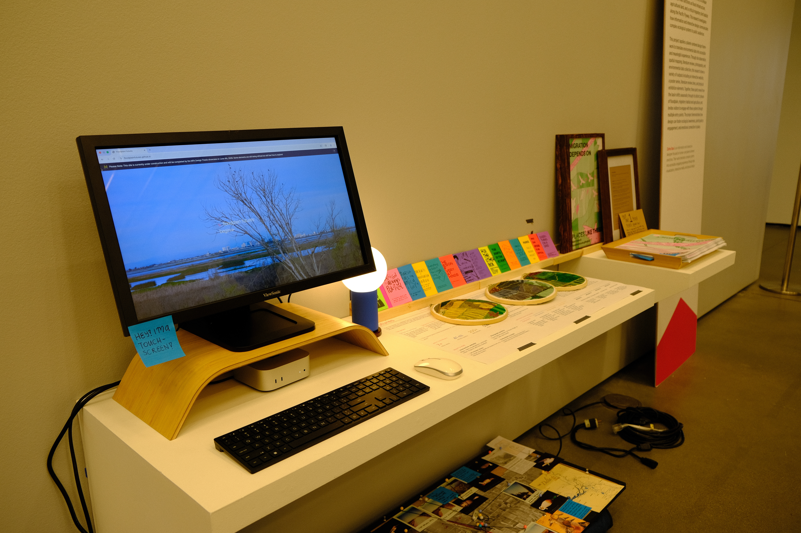
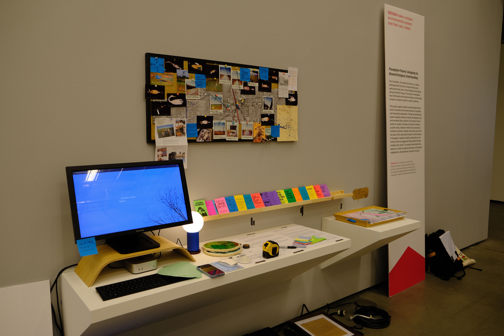
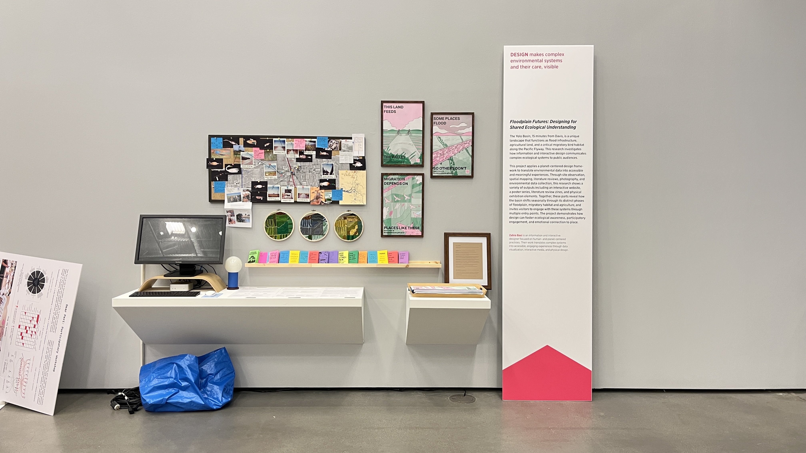
basin timeline
The Yolo Basin has a long history of flood, management, and ecological work. Key moments from 1851 to today, from the Great Flood to the 2025 Big Notch salmonid restoration project. Click on each event to learn more.
Fremont, the first Yolo County seat, is wiped out by floods at the Sacramento and Feather River confluence. An early and dramatic reminder of the basin's vulnerability to seasonal flooding.
The largest recorded flood in the history of California, following several severe storms in succession. The Sacramento Valley becomes an inland sea for weeks, reshaping the region's relationship to water and flood management for generations.
The State Legislature enacts flood control legislation and construction of major infrastructure begins. The Yolo Basin begins its transformation into a managed floodplain, both ecological system and engineered landscape.
March 18th: the original causeway opens, stretching 3.13 miles across the floodplain. A three-day celebration is held. The causeway becomes one of the longest bridges in the western United States, and the structure most people associate with the basin today.
Established as a federal project under the U.S. Army Corps of Engineers. The Yolo Bypass is engineered into the landscape: land functioning simultaneously as infrastructure and ecological system.
The first Audubon Christmas Bird Count in the Sacramento circle begins, covering part of the Bypass. An early instance of citizen science documenting the basin's extraordinary migratory bird habitat along the Pacific Flyway.
A community organization is established with plans to assist in the creation of the Yolo Bypass Wildlife Area. The Foundation becomes a key advocate for the basin's conservation and public access.
The U.S. House approves $1.6 million in the Army Corps budget for the Yolo Basin Wetlands Project. The State Wildlife Conservation Board separately approves $4.75 million for a 3,100-acre land purchase. A turning point for the basin as recognized habitat.
The California Department of Fish & Wildlife opens the Yolo Bypass Wildlife Area to the public. For the first time, people can formally visit and experience the basin, fifteen minutes from Davis.
UC Davis and the Department of Water Resources Trout begin collaborative research on flooded rice fields as salmon habitat. The Nigiri Project demonstrates that agricultural land and fish habitat can coexist, and even support each other.
Yolo Bypass Salmonid Habitat Restoration and Fish Passage is completed. The Big Notch project improves fish passage through the bypass, reconnecting salmon to historic habitat and marking a new chapter in the basin's ecological restoration.
thank you!
This project is meant to show that design can be a tool for making complex environmental systems easier to see, understand, and care about. It is an attempt to do that for a landscape that most people pass by without stopping. The Yolo Basin is not a dramatic place at first glance, but it is doing a lot of work, ecologically and infrastructurally, and most of that work is invisible to the people who live near it.
The goal is not to teach people facts about the basin. It is to give them enough of an entry point that they start to notice it. A zine they read on the bus, a poster on their wall, a map they explore for ten minutes. Any of those is enough.
the colophon
A colophon is a note at the end of a publication that describes the materials, tools, & people involved in making it.
- Designer
- Zahra Baxi: MFA Design, University of California Davis, 2026
- Website
- Built from scratch in Visual Studio Code w/ HTML, CSS, & JavaScript. Version-controlled w/ Git & hosted via GitHub Pages.
- Embroidery
- Three 8.25-inch hoops. Embroidered by hand using embroidery floss over printed maps & aerial photographs of the Yolo Basin.
- Risograph Posters
- Printed in emerald green & fluorescent pink on the Risograph from University of California Climate Action Arts Network (UC CAAN) at UC Davis. Black ink on top from the UC Davis Design department printer. Poster design by Zahra Baxi.
- Images & Media
-
Photos taken on the following digital & analog cameras: Canon EOS Elan 35mm (1991) w/ FujiFilm 200, Fujifilm X-T3 (2018), Polaroid OneStep 600 (1983), and Fujifilm Discovery 35mm (1994) w/ Portra 400.
Additional materials sourced & authorized for use from the following UC Davis departments:
- Museum of Wildlife & Fish Biology (MWFB) ↗: provided bird specimens for photography. Thanks to Irene E. Engilis for access to the Museum & Kevin Wu for helping identify & gather specimens for photography + checking taxonomy.
- Library Map Collection ↗: provided aerial photography used as site maps. Thanks to Michele M. Tobias for helping find material & John Pike for scanning.
- Archives & Special Collections ↗: provided Yolo Basin Foundation archival material, including postcards & event posters.
- With Thanks To
-
The MFA Design Class of 2026 cohort, whose feedback, company, & support shaped this project throughout.
My thesis committee, Glenda Drew, Brett Snyder, & Tom Maiorana, for their generous guidance & resources throughout the thesis process. Special thanks to my chair Glenda, whose support & mentorship over all the years I've known her is a large part of why I pursued this path at all.
My family, for their continued love & support throughout my time @ UC Davis.